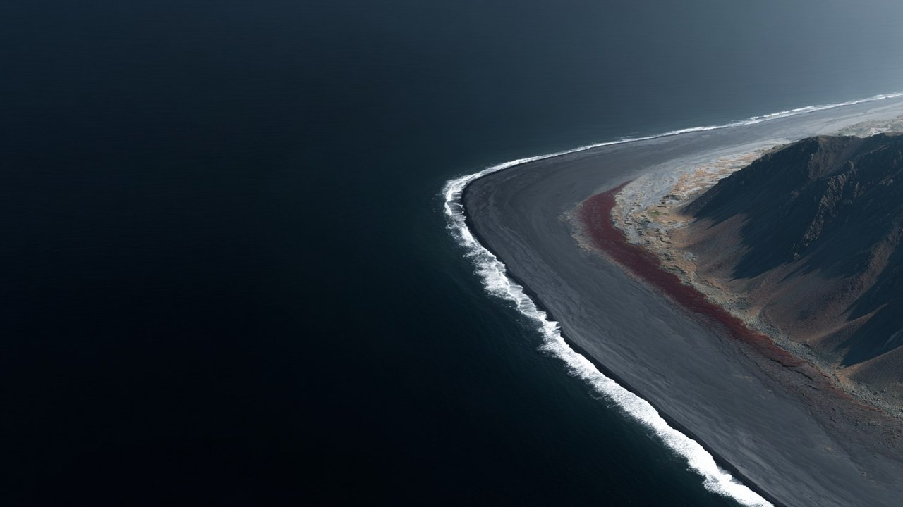

Menu
Version 2
Studio Rive
Ce lien ouvre la version 2. La version 3 est arrivée le 18 novembre.
Voir la version 3
Fermer

From the Other Shore
Version 2 · remplacée, plus validable
Vos retours sur la v2 · traités dans la v3
0:04
Plan 02 · La côte
Le cadre est trop serré, on ne voit pas assez le rivage.
0:15
Plan 05 · La fleur
Le fond est trop sombre, la fleur se perd.
Ouvrir la version 3
← Tous les écrans
Mobile, ancien lien
Cliquez sur un bouton, ou appuyez sur H pour voir les zones cliquables